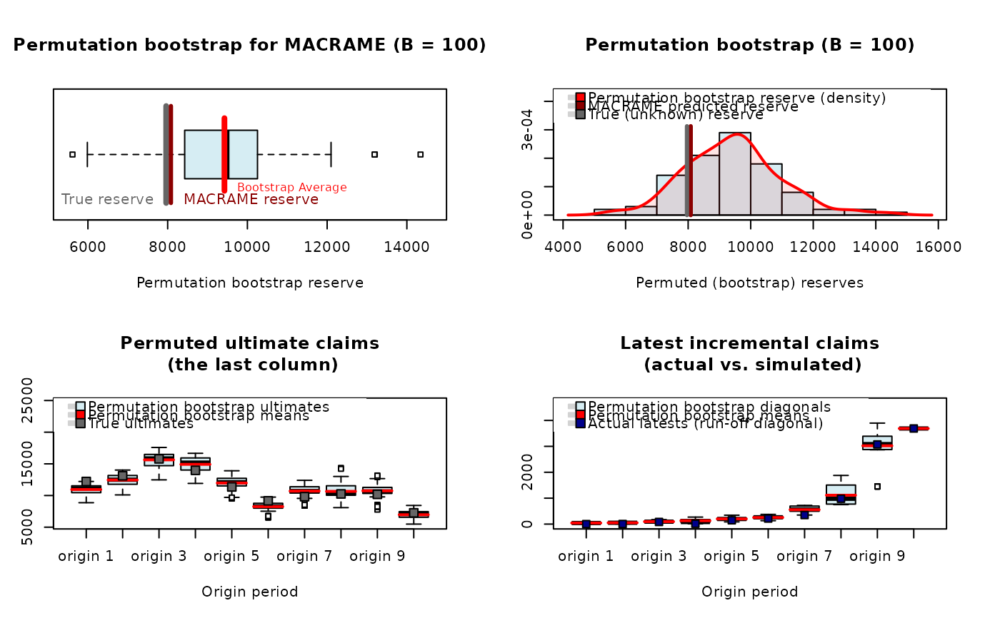

Plotting the Output of the Permutation Bootstrap
plot.permutedReserve.RdThe function provides a graphical visualization of the results obtained from
the permutation bootstrap (see Maciak, Mizera, and Pesta (2022) for further
details) applied to the output of some parametric or nonparametric reserving
technique. In particular, the classical parametric methods include GLM based
reserving, the Mack Chain Ladder model, and the Tweedie model (all implemented
in the package ChainLadder). Nonparametric (so-called functional-based)
methods include three algorithms implemented in the ProfileLadder
package (PARALLAX, REACT, and MACRAME)
Usage
# S3 method for class 'permutedReserve'
plot(x, ...)Arguments
- x
an object of the class
permutedReserve– i.e., the output of thepermuteReserve()function- ...
other graphical parameters to plot
Value
The function returns a layout for four plots. The first panel shows a simple barplot type visualization of the estimated reserve, the estimated ultimate, and the true reserve (if available). The second panel provides a histogram for (permuted) bootstrapped reserves with a nonparametric estimate of the corresponding density. The third panel provides a detailed inspection of the bootstrapped ultimates (with true ultimates if provided) and, finaly, the last panel shows the observed diagonal vs. simulated ones.
Examples
## reserve estimated by MACRAME and the corresponding visualization
x <- mcReserve(CameronMutual)
plot(permuteReserve(x, B = 100))
#>
| | 0 % ~calculating
|> | 1 % ~01s
|> | 2 % ~01s
|>> | 3 % ~01s
|>> | 4 % ~01s
|>>> | 5 % ~01s
|>>> | 6 % ~01s
|>>>> | 7 % ~01s
|>>>> | 8 % ~01s
|>>>> | 9 % ~01s
|>>>>> | 10% ~01s
|>>>>> | 11% ~01s
|>>>>>> | 12% ~01s
|>>>>>> | 13% ~01s
|>>>>>>> | 14% ~01s
|>>>>>>> | 15% ~01s
|>>>>>>> | 16% ~01s
|>>>>>>>> | 17% ~01s
|>>>>>>>> | 18% ~01s
|>>>>>>>>> | 19% ~01s
|>>>>>>>>> | 20% ~01s
|>>>>>>>>>> | 21% ~01s
|>>>>>>>>>> | 22% ~01s
|>>>>>>>>>> | 23% ~01s
|>>>>>>>>>>> | 24% ~01s
|>>>>>>>>>>> | 25% ~01s
|>>>>>>>>>>>> | 26% ~01s
|>>>>>>>>>>>> | 27% ~01s
|>>>>>>>>>>>>> | 28% ~01s
|>>>>>>>>>>>>> | 29% ~00s
|>>>>>>>>>>>>> | 30% ~00s
|>>>>>>>>>>>>>> | 31% ~00s
|>>>>>>>>>>>>>> | 32% ~00s
|>>>>>>>>>>>>>>> | 33% ~00s
|>>>>>>>>>>>>>>> | 34% ~00s
|>>>>>>>>>>>>>>>> | 35% ~00s
|>>>>>>>>>>>>>>>> | 36% ~00s
|>>>>>>>>>>>>>>>> | 37% ~00s
|>>>>>>>>>>>>>>>>> | 38% ~00s
|>>>>>>>>>>>>>>>>> | 39% ~00s
|>>>>>>>>>>>>>>>>>> | 40% ~00s
|>>>>>>>>>>>>>>>>>> | 41% ~00s
|>>>>>>>>>>>>>>>>>>> | 42% ~00s
|>>>>>>>>>>>>>>>>>>> | 43% ~00s
|>>>>>>>>>>>>>>>>>>> | 44% ~00s
|>>>>>>>>>>>>>>>>>>>> | 45% ~00s
|>>>>>>>>>>>>>>>>>>>> | 46% ~00s
|>>>>>>>>>>>>>>>>>>>>> | 47% ~00s
|>>>>>>>>>>>>>>>>>>>>> | 48% ~00s
|>>>>>>>>>>>>>>>>>>>>>> | 49% ~00s
|>>>>>>>>>>>>>>>>>>>>>> | 50% ~00s
|>>>>>>>>>>>>>>>>>>>>>> | 51% ~00s
|>>>>>>>>>>>>>>>>>>>>>>> | 52% ~00s
|>>>>>>>>>>>>>>>>>>>>>>> | 53% ~00s
|>>>>>>>>>>>>>>>>>>>>>>>> | 54% ~00s
|>>>>>>>>>>>>>>>>>>>>>>>> | 55% ~00s
|>>>>>>>>>>>>>>>>>>>>>>>>> | 56% ~00s
|>>>>>>>>>>>>>>>>>>>>>>>>> | 57% ~00s
|>>>>>>>>>>>>>>>>>>>>>>>>> | 58% ~00s
|>>>>>>>>>>>>>>>>>>>>>>>>>> | 59% ~00s
|>>>>>>>>>>>>>>>>>>>>>>>>>> | 60% ~00s
|>>>>>>>>>>>>>>>>>>>>>>>>>>> | 61% ~00s
|>>>>>>>>>>>>>>>>>>>>>>>>>>> | 62% ~00s
|>>>>>>>>>>>>>>>>>>>>>>>>>>>> | 63% ~00s
|>>>>>>>>>>>>>>>>>>>>>>>>>>>> | 64% ~00s
|>>>>>>>>>>>>>>>>>>>>>>>>>>>> | 65% ~00s
|>>>>>>>>>>>>>>>>>>>>>>>>>>>>> | 66% ~00s
|>>>>>>>>>>>>>>>>>>>>>>>>>>>>> | 67% ~00s
|>>>>>>>>>>>>>>>>>>>>>>>>>>>>>> | 68% ~00s
|>>>>>>>>>>>>>>>>>>>>>>>>>>>>>> | 69% ~00s
|>>>>>>>>>>>>>>>>>>>>>>>>>>>>>>> | 70% ~00s
|>>>>>>>>>>>>>>>>>>>>>>>>>>>>>>> | 71% ~00s
|>>>>>>>>>>>>>>>>>>>>>>>>>>>>>>> | 72% ~00s
|>>>>>>>>>>>>>>>>>>>>>>>>>>>>>>>> | 73% ~00s
|>>>>>>>>>>>>>>>>>>>>>>>>>>>>>>>> | 74% ~00s
|>>>>>>>>>>>>>>>>>>>>>>>>>>>>>>>>> | 75% ~00s
|>>>>>>>>>>>>>>>>>>>>>>>>>>>>>>>>> | 76% ~00s
|>>>>>>>>>>>>>>>>>>>>>>>>>>>>>>>>>> | 77% ~00s
|>>>>>>>>>>>>>>>>>>>>>>>>>>>>>>>>>> | 78% ~00s
|>>>>>>>>>>>>>>>>>>>>>>>>>>>>>>>>>> | 79% ~00s
|>>>>>>>>>>>>>>>>>>>>>>>>>>>>>>>>>>> | 80% ~00s
|>>>>>>>>>>>>>>>>>>>>>>>>>>>>>>>>>>> | 81% ~00s
|>>>>>>>>>>>>>>>>>>>>>>>>>>>>>>>>>>>> | 82% ~00s
|>>>>>>>>>>>>>>>>>>>>>>>>>>>>>>>>>>>> | 83% ~00s
|>>>>>>>>>>>>>>>>>>>>>>>>>>>>>>>>>>>>> | 84% ~00s
|>>>>>>>>>>>>>>>>>>>>>>>>>>>>>>>>>>>>> | 85% ~00s
|>>>>>>>>>>>>>>>>>>>>>>>>>>>>>>>>>>>>> | 86% ~00s
|>>>>>>>>>>>>>>>>>>>>>>>>>>>>>>>>>>>>>> | 87% ~00s
|>>>>>>>>>>>>>>>>>>>>>>>>>>>>>>>>>>>>>> | 88% ~00s
|>>>>>>>>>>>>>>>>>>>>>>>>>>>>>>>>>>>>>>> | 89% ~00s
|>>>>>>>>>>>>>>>>>>>>>>>>>>>>>>>>>>>>>>> | 90% ~00s
|>>>>>>>>>>>>>>>>>>>>>>>>>>>>>>>>>>>>>>>> | 91% ~00s
|>>>>>>>>>>>>>>>>>>>>>>>>>>>>>>>>>>>>>>>> | 92% ~00s
|>>>>>>>>>>>>>>>>>>>>>>>>>>>>>>>>>>>>>>>> | 93% ~00s
|>>>>>>>>>>>>>>>>>>>>>>>>>>>>>>>>>>>>>>>>> | 94% ~00s
|>>>>>>>>>>>>>>>>>>>>>>>>>>>>>>>>>>>>>>>>> | 95% ~00s
|>>>>>>>>>>>>>>>>>>>>>>>>>>>>>>>>>>>>>>>>>> | 96% ~00s
|>>>>>>>>>>>>>>>>>>>>>>>>>>>>>>>>>>>>>>>>>> | 97% ~00s
|>>>>>>>>>>>>>>>>>>>>>>>>>>>>>>>>>>>>>>>>>>>| 98% ~00s
|>>>>>>>>>>>>>>>>>>>>>>>>>>>>>>>>>>>>>>>>>>>| 99% ~00s
|>>>>>>>>>>>>>>>>>>>>>>>>>>>>>>>>>>>>>>>>>>>| 100% elapsed=01s
